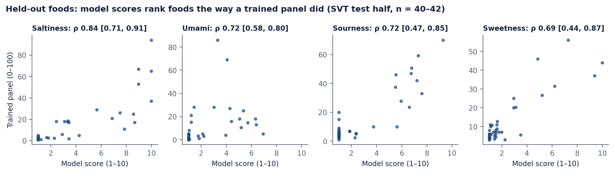
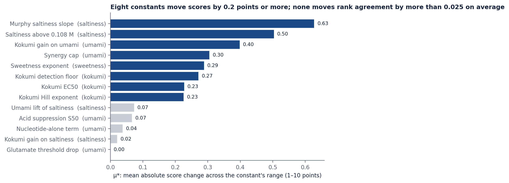

Mendocino Food Consulting · Human Flavorome Project · Technical report
Taste Check predicts the intensity of six tastes (umami, saltiness, sweetness, sourness, kokumi, bitterness) from a food's composition. It chains published human dose-response curves with documented interaction terms and computes pH by charge balance. No parameter is fitted to the validation panel.
This report describes version 2.17.0: its equations, the evidence behind each of 142 constants, its 829-ingredient database, verification, held-out validation, a sensitivity analysis and a roadmap.
Accuracy is therefore limited mainly by ingredient composition data and by single-food validation. What a score means rests on a few choices: which human saltiness curve is used (Feeney & Hayes 2014 from v2.17.0; Murphy et al. 1981 before), and the kokumi curve and gain. We rank eight additions from human panels, AI and autonomous laboratories by the uncertainty each would remove, and describe a closed loop in which AI chooses the next measurement and an automated laboratory makes it; the top three are filling glutamate and acid data for the most common missing ingredients, a recipe-level panel, and a human glutathione dose-response.
Taste Check predicts how salty, savory (umami), sweet, sour, bitter and rich (kokumi) a food or recipe should taste from its chemical composition. It is meant for product developers and researchers who want a first estimate before a bench sample or a panel.
The model takes ingredients and amounts, plus optional cooking time, temperature and water loss. It returns six intensities, each on the scale of the human study it was calibrated to, and the same six as 1–10 scores. It also returns a predicted pH, salt and sugar concentrations, sodium in mg, and notes that flag data gaps and extrapolation.
| Output | Raw scale (human source) | 10/10 reference |
|---|---|---|
| Umami | Yamaguchi 1967 interval scale for MSG | 5 g/dL MSG-equivalent, with the kokumi boost at maximum |
| Saltiness | Feeney & Hayes 2014 gLMS ratings (n = 193) | 0.5 M NaCl (about 3%, seawater) |
| Sweetness | Moskowitz 1970 ratio scale | 10% w/w sucrose |
| Sourness | Yamaguchi 1979 tartaric-acid scale | 5% w/v citric acid (about straight lemon juice) |
| Kokumi | % of a glutathione dose-response curve | 100% |
| Bitterness | Spectrum scale (Torrico & Prinyawiwatkul 2015) | Spectrum 10, about 0.15% caffeine |
What it does not predict. Liking, aroma, flavor, texture, fat taste, pungency, astringency and temperature effects are out of scope. Bitterness is scored for six compounds only (caffeine, theobromine, KCl, rebaudioside A, acesulfame K and saccharin), with a note for twelve other bitter classes.
The six scales are not commensurable. Each raw scale comes from a different study and method. A saltiness of 6 and an umami of 6 are not equally strong; the scores make each taste readable on its own, not comparable across tastes.
The model is a chain of published human dose-response curves, not a fitted statistical model: no parameter was tuned to the validation panel.
compute() in hfp_model.py).Composition is summed and diluted, the pH and sour stimulus are solved once, each taste is read on its own human curve, and documented interaction terms couple the tastes before scoring.
Every module is a published human dose-response curve, joined to the others by interaction terms from separate studies. Concentrations are summed over the recipe, the chemistry (pH) runs in the recipe's water, and every tasted concentration is then expressed per 100 g of food.
For each compound X summed over ingredients, the water-phase concentration (g per 100 mL) and the tasted concentration are:
where m is ingredient mass (g), d is mg per 100 g, W is total water and M total mass after any evaporation. The whole-food factor W/M (adopted in v2.8.5) follows Stark et al. (2006) and raised held-out saltiness agreement on 43 low-water foods from ρ 0.37 to 0.77.
pH solves a charge balance over 13 organic acids, glutamate, aspartate, nucleotides, Na, K, chloride and a generic protein buffer (plus a muscle buffer for meat and fish), by bisection. Each ingredient carries a calibrated unknown charge so that, alone, it sits at its FDA reference pH. The sour stimulus counts H⁺ plus all protonated acid (Da Conceicao Neta et al. 2007):
Glutamate u and aspartate v count above thresholds that nucleotides lower up to 63-fold (Yamaguchi & Ninomiya 2000). Yamaguchi's synergy equation is applied as a fold, capped at 63, and scaled down above pH 6.5 (Yamaguchi 1979):
with w, x, y the AMP, IMP and GMP concentrations (sodium-salt forms, g/dL). Intensity follows Yamaguchi (1967) Fig. 2, is reduced by acid through a logistic fitted at start-up to Miranda et al. (2021) (S50 24.8 mM, Hill 0.64 in v2.17.0) and is raised by kokumi k (%):
Sodium molarity above its detection threshold is read on the mean NaCl intensity curve of Feeney & Hayes (2014) Fig. 4 (193 genotyped adults, gLMS, 0.01–1 M; five points digitized from the figure's vector paths and pooled across CA6 genotypes by n), interpolated linearly in log-log space, with the end slopes held outside the measured range. Until v2.17.0 this step used a log fit to Murphy et al. (1981) (10 people, 0.004–0.108 M), which read zero below 0.0118 M and was extrapolated for most salted food. Chloride potassium is still converted to the iso-salty NaCl molarity on Murphy's scale and added (concentration addition). Umami lifts effective sodium by up to 10% at low sodium (Sun et al. 2022), and kokumi raises the result:
where (c₀, v₀)–(c₁, v₁) is the segment of (0.01, 2.16), (0.032, 4.27), (0.1, 12.78), (0.32, 25.51), (1.0, 43.12) (M, gLMS) that contains the concentration. The 10/10 anchor stays 0.5 M NaCl (raw 31.33).
Sugars and sweeteners are converted to sucrose equivalents (Moskowitz 1970 relative sweetness; Wee et al. 2018 and Schiffman et al. 1995 for polyols and high-intensity sweeteners), lowered by acid through a citric-equivalent factor q (Schifferstein & Frijters 1990; McBride & Johnson 1987), and read on Moskowitz's power function:
The sour stimulus, softened by sugar (Schifferstein & Frijters 1990), is converted to the tartaric-acid concentration with the same stimulus and read on Yamaguchi (1979): I = 14.45 · log₂(x / 0.00296), zero below 0.00094 g/100 mL.
Glutathione equivalents (γ-Glu-Val-Gly × 12.8, Ohsu et al. 2010; cysteine sulfoxides × 1.0) are read on a Hill curve, minus the human detection floor, which falls as umami rises (Ueda et al. 1997):
The EC50 (0.9122 mM) and Hill exponent have no primary source; they are calibrated only against human thresholds and single doses (section 4).
Caffeine and KCl follow Torrico & Prinyawiwatkul (2015) power functions, theobromine and the sweeteners enter as caffeine equivalents, sodium (Breslin & Beauchamp 1995) and sugar (Calvino et al. 1990) suppress, and compounds add by concentration:
Each raw intensity maps linearly to a score, 1 + 9 × min(1, raw / REF), with REF the 10/10 anchors in section 1. The mapping is the author's choice and keeps rank and spacing within each taste. The complete specification, including the cooking, evaporation and data-gap rules, is rebuild/REBUILD.md in the repository.
Of the 118 constants that carry taste meaning, 71 (60%) are printed in, or computed directly from, a primary source; 21 (18%) are fits to published figures; 25 (21%) are modelling assumptions; one is unsourced. The full register, with page numbers, is section 12 of rebuild/REBUILD.md; check_spec.py fails a release if any constant in the code is missing from it.
| Evidence level | Constants | What it means |
|---|---|---|
| Verified in source | 53 | Number printed in the cited paper and checked against it |
| Derived from source | 18 | Computed from printed numbers; arithmetic given |
| Fitted or digitized | 21 | A curve fit to, or reading of, a published figure |
| Assumption | 25 | A modelling choice; reasoning documented |
| Unsourced | 1 | Kokumi Hill exponent (1.456) |
| Standard or implementation | 24 | Handbook constants, units, solver settings |
The judgment calls that matter most for predictions (section 8 measures this) are:
The database holds 829 ingredients, but the taste-active fields that drive umami, sourness and kokumi are filled for only a quarter to a half of them. A blank counts as zero, so a missing value reads as "none" unless the data-gap notes fire.
| Field | Ingredients with a value | Field | Ingredients with a value |
|---|---|---|---|
| Water | 100% | Reference pH | 36% |
| Sodium | 99% | Glutathione | 25% |
| Density (volume entries) | 86% | GMP | 24% |
| Sucrose | 79% | Citric acid | 22% |
| Glutamate | 49% | IMP | 21% |
Where values come from. USDA FoodData Central (SR Legacy 2018-04) supplies water, sodium, potassium, protein, sugars, caffeine, theobromine and density for 392 rows. Glutamate and nucleotides come mainly from Yamaguchi & Ninomiya (2000) and Nguyen et al. (1988); reference pH from the FDA "Approximate pH of Foods" list. Most original glutamate, nucleotide and sugar values carry only a general source, not a per-value citation (hfp_ingredient_provenance.csv).
Estimated values. 501 field values are tiered in hfp_data_quality.csv: 35 tier 1 (measured, newly sourced), 178 tier 2 (derived or copied from a sibling food) and 288 tier 3 (category estimates, such as a median pH of similar foods).
What this means in real recipes. Across 33,521 parsed Food.com recipes (live parser, v2.16.2 densities):
The model exists as two implementations that agree to machine precision: a Python reference (hfp_model.py, standard library only) and the JavaScript that runs on the public page. The JavaScript was ported from the Python, so this tests the port, not the science. The original Excel workbook matched the Python to 4e-12 through v2.6; later versions are maintained in Python and JavaScript only.
| Check | What it tests | Result (v2.16.2) |
|---|---|---|
| Golden recipes | 43 frozen recipes, every output | All match |
| Literature panel sets | Outputs on 19 published panel designs against frozen values (a regression check; accuracy is section 7) | All match |
| Web parity | Python vs JavaScript, 43 recipes, all outputs and sodium totals | Worst difference 1.9e-16 |
| Random fuzz | 500 random recipes, Python vs JavaScript | 0 failures |
| Cooking parity | 1,575 cooking water-loss cases | Pass (worst 0.5 g) |
| Interface scenarios | 29 page workflows | 29 of 29 |
| Real-world paste | 460 Food.com recipes through the page parser | 81% of lines read exactly; sodium within 2.5× of Food.com for 88% of recipes |
| Rebuild package | 53 recipes regenerated from the live page by oracle.js | Tolerances in REBUILD.md section 15 |
| Specification check | Every constant in the live code documented with a source | Pass |
On 43 foods held out from development, model scores ranked the foods the way a trained panel did, with Spearman ρ 0.69 to 0.86 across four tastes. Saltiness agreed best; sweetness and sourness have the widest intervals.
Panel. The Dutch taste database (Mars et al. 2020, SVT v004, DANS doi:10.17026/dans-xst-ughm, CC BY-SA 4.0): 15 trained panellists, modified Spectrum method, 0–100 scales anchored with sucrose, NaCl, citric acid, caffeine and MSG, triplicate means. 89 foods map exactly or closely to a single database ingredient (or a two-ingredient preparation SVT states). A seeded split on November 25, 2026 put 43 in a test half; the split was not used to tune any model parameter since.
| Taste | Test half n | Spearman ρ | 95% bootstrap CI | Dev half ρ |
|---|---|---|---|---|
| Saltiness | 41 | 0.86 | 0.74–0.92 | 0.85 |
| Umami | 42 | 0.72 | 0.58–0.80 | 0.66 |
| Sourness | 40 | 0.72 | 0.47–0.85 | 0.74 |
| Sweetness | 40 | 0.69 | 0.44–0.87 | 0.87 |

Kokumi and bitterness are not tested: SVT does not rate kokumi, and bitterness is covered for six compounds only.
Other held-out evidence. The whole-food concentration basis was adopted only after a pre-registered test on 43 low-water foods outside this set (composition from NEVO 2025): saltiness ρ 0.37 [0.11, 0.60] → 0.77 [0.59, 0.88], sweetness 0.46 [0.24, 0.65] → 0.84 [0.72, 0.90].
Caveats. The SVT foods are single foods, not recipes. The full SVT panel was viewed during earlier development (v2.8, before the split), so the test half is held out from tuning, not unseen. The two most umami-intense test foods sit far off the line: soy sauce (panel 86 of 100, model 3.3) and Parmesan (panel 69, model 4.1); the model compresses the top of the umami range for salty, acidic, glutamate-rich foods. Rank agreement also does not show that the 1–10 scale is calibrated: a food scored 6 is not guaranteed to taste "moderate" to a panel.
The uncertain constants change how strong the scores read, but barely change how foods rank: moving any one constant across its plausible range changed held-out panel agreement by 0.011 in ρ or less on average. Ranking is driven by composition; calibration is driven by a handful of constants.
Method. Morris elementary-effects screening (r = 20 trajectories, 4 levels, 281 model runs) over 13 constants that are fitted, assumed or unsourced, each across a range taken from the sources themselves (for example, the kokumi gain from 0.20 to 0.90, spanning Goto 2016 and Ohsu 2010; the synergy cap from 16 to 305). Outputs: the mean absolute score change across the 89 SVT foods (μ*), and the mean absolute change in test-half Spearman ρ.
| Constant (range tested) | Score most affected | μ* (points) | Mean |Δρ| |
|---|---|---|---|
| Saltiness curve (Feeney 2014 vs Murphy 1981 log fit) | Saltiness | 0.83 | 0.011 |
| Kokumi gain on umami (0.20–0.90) | Umami | 0.40 | 0.004 |
| Synergy cap (16–305×) | Umami | 0.30 | 0.007 |
| Moskowitz sweetness exponent (1.1–1.5) | Sweetness | 0.29 | 0.005 |
| Kokumi detection floor (½–2× Ueda 1997) | Kokumi | 0.27 | 0.004 |
| Feeney curve exponents (±15%) | Saltiness | 0.24 | 0.001 |
| Kokumi EC50 (0.30–2.74 mM) | Kokumi | 0.23 | 0.004 |
| Kokumi Hill exponent (1.0–2.0) | Kokumi | 0.23 | 0.002 |
| Acid suppression S50 (14.7–58.8 mM) | Umami | 0.07 | 0.007 |
| Umami lift of saltiness (0–0.20) | Saltiness | 0.06 | 0.008 |
| Nucleotide-alone term (½–2×) | Umami | 0.04 | 0.003 |
| Kokumi gain on saltiness (0.20–0.90) | Saltiness | 0.03 | 0.006 |
| Glutamate threshold drop (32–126×) | none | 0.00 | 0.000 |

Three recipes were computed from the equations in section 3 alone, with composition typed from the database, and matched the released model to six decimal places.
| Recipe | Hand calculation | Model | Score |
|---|---|---|---|
| 1 g salt + 99 g water | Na 0.1711 M; 12.7824 × (0.1711/0.1)^0.5941 = 17.5878 | 17.5878 | 6.05 |
| 0.2 g MSG + 99.8 g water | MSG·H₂O-eq 0.2213 g/dL; (3.6672·ln 0.2213 + 12.555) × 0.99965 = 7.0216 | 7.0216 | 3.43 |
| 10 g sugar + 90 g water | 9.994% sucrose; 0.54 × 9.994^1.3 = 10.766 | 10.766 | 9.99 |
The MSG case first missed by 0.035%. The gap was the acid factor at pH 7.0 (0.99965), which the hand calculation had rounded to 1. Tracing it showed that the code's fitted acid-suppression constants (S50 24.8 mM, Hill 0.64) differed from those printed in the specification (29.4 mM, 0.9, the values before a v2.13.0 change to the sour stimulus). The code, the page and the package test file agreed; the specification text has been corrected (section 11).
Format after Mitchell et al. (2019), "Model Cards for Model Reporting."
| Model | Taste Check (Human Flavorome Project) v2.17.0, mechanistic composition-to-taste model; Python reference and browser JavaScript |
| Developer | Bryan Quoc Le, PhD, Mendocino Food Consulting, 2023–2026 |
| Intended use | Ranking and comparing formulations by expected taste intensity before bench work; finding which ingredient drives a taste; teaching taste chemistry |
| Intended users | Food scientists, product developers, students, researchers |
| Out of scope | Predicting liking or purchase; replacing a sensory panel; food-safety or labeling decisions (the predicted pH must not be used for acidified-food compliance); aroma, flavor, texture, heat, fat taste |
| Performance | Held-out trained-panel rank agreement ρ 0.69–0.86 for umami, saltiness, sweetness and sourness (section 7) |
| Known failure modes | Ingredients with missing glutamate, nucleotide or acid data read too low; salty solids (bread, cheese, chips) read saltier than they taste; the most umami-intense foods read too low; bitterness from unmodeled compounds is missed; kokumi and its boosts rest on an unsourced curve |
| Practical notes | Scores look precise; they are estimates from composition tables, not measurements. Recipes are scored as written |
| License | Code MIT; database, test data and documentation CC BY 4.0; SVT-derived panel files CC BY-SA 4.0 |
The model's main weakness is that each module rests on one or two small human studies in water, applied to whole foods.
The sensitivity results reorder the obvious wish list. Rank agreement is limited by composition data, so better ingredient data comes first. Calibration (what a score of 6 means) is limited by a few constants, which targeted human panels can pin down.
| # | Data to add | Type | What it fixes | Evidence it matters |
|---|---|---|---|---|
| 1 | Glutamate, nucleotides and organic acids for the 20 ingredients carrying the most missing mass (vegetable broth, sausage, canned beans, cream, rice first) | Autonomous lab; AI until measured | Umami and sourness ranking in real recipes | 12% of the median recipe's mass has no glutamate value |
| 2 | A recipe-level panel: 20–30 dishes spanning salt, umami and acid, rated on the SVT scales | Human | Mixture validity; what each score means | Validation so far is single foods only |
| 3 | A glutathione dose-response in an umami-salt base, rating umami and saltiness separately | Human | Kokumi EC50, Hill, floor and both gains | Kokumi gain is the largest umami lever (μ* 0.40) |
| 4 | Potassium chloride and NaCl/KCl blends rated with the Feeney & Hayes gLMS design, so both cations share one human scale | Human | KCl saltiness, still converted on Murphy et al. (1981), 10 people | The curve choice is the largest single lever on any score (μ* 0.83) |
| 5 | Equal-saltiness matching of breads, cheeses and chips against NaCl solutions | Human | The salty-solids overestimate | Bread tastes like 7–12% of its sodium |
| 6 | Map more of the SVT database and other open panels to the model | AI | Larger held-out set; per-category error | 43 test foods give wide CIs |
| 7 | Large rated-recipe corpora analysed in physical units | AI | Real-world direction of effects; liking context | Companion analysis: bread liking peaks at 1.69% salt on flour |
| 8 | Compound data for unmodelled bitters (catechins, naringin, hop acids, glucosinolates) | AI, then autonomous lab | Bitterness coverage | 12 bitter classes are notes only |
AI here means software that reads, reasons over and acts on data at a scale one person cannot: language models that extract values from papers, statistical learners that fill or correct numbers, and agents that plan and run analyses. Four uses fit a model whose value is that every score traces to a compound and a published curve:
Replacing the mechanistic chain with a black-box predictor would give up the property that makes the model useful. With 89 rated foods, it would also overfit. Every AI use above therefore feeds the existing structure rather than standing in for it, and each must pass a held-out test registered before it is run, as the whole-food basis did (section 7).
An autonomous (self-driving) laboratory pairs robotic sample preparation and analysis with software that decides what to run next. For this model it would close a loop that is now done by hand over months:
This attacks the model's main limit directly. Items 1 and 8 in the table are measurement problems, and an automated lab could measure hundreds of ingredients, in raw and cooked forms, at a cost and speed no hand-run lab can match. The same equipment can prepare the exact factorial mixtures that human panels need (items 2 to 5), so panel time is spent rating samples, not making them.
Automated labs can also run fast proxies for taste: receptor assays in cultured cells (T1R1/T1R3 for umami, CaSR for kokumi) and electronic tongues. These can screen thousands of mixtures, but they are proxies. The kokumi curve in this model is the warning: it comes from CaSR activation in cultured cells and has never been tied to a human dose-response (section 4). A proxy becomes useful only once it is calibrated against human ratings on the same samples.
What does not change. Perceived intensity is measured only in people. The aim of AI and autonomous labs is to make human panels fewer, smaller and better aimed, by arriving with the composition already measured, the mixtures already made and the question already narrowed to the constant that matters.
rebuild/REBUILD.md is the full specification; rebuild/test_recipes.json lets anyone check a re-implementation.validation/model_paper_2026-11/ in the repository (analyses.py: evidence tally, database coverage, SVT validation and Morris screening; worked_examples.py; figures.py; results in results/).